TETRA (Terrestrial Trunked Radio): europejski standard ETSI łączności służb
TEA2szyfrowanie łącza radiowego dla służb
Operator · Policja
projektuje, buduje, utrzymuje i rozwija sieć
stacje bazowe, centrala (MSO)
numeracja, klucze
PSP
radiotelefony: przenośne, nasobne, przewoźne
stanowiska kierowania (konsole)
głos, wiadomości SDS, statusy i lokalizacja → SWD PSP
OSP
dziś DMR → TETRA w przyszłości
z PSP: walizka RF↔RF (akcje, ćwiczenia)
patch w stanowisku kierowania (codziennie)
brama sieciowa: tylko jako usługa operatora
Fazy (bez dat)
0uzgodnienia z operatorem
1stolice województw i duże miasta
2pozostałe duże powiaty
3obszary podmiejskie i gminy
4utrzymanie
TEA2: w TMO klasa bezpieczeństwa 3 z wzajemnym uwierzytelnieniem (ETSI EN 300 392-7), w DMO klucze floty (EN 300 396-6); kolejna generacja TEA5–TEA7 (klucz 192-bit). TEA2 chroni łącze radiowe, dlatego polecenia dla sterowników syren przez TETRA mają własny kod uwierzytelniający. Interfejs TETRA–SWD PSP: wymagania przekazane KGP 5.11.2026.
Sieć
Sekcja 01 · BIŁ KG PSP · Łączność
TMO i DMO
przez sieć albo bezpośrednio radio–radio
TMO · przez siećTEA2
DMO · bezpośrednioTEA2
Stacje bazowe i centralagrupy ogólnokrajowe, stanowisko kierowania, lokalizacja w SWD
Radio–radio, bez infrastrukturyakcja w budynku, w dolinie, po awarii stacji; nadal szyfrowane
pomiędzy
LSTtranking lokalny: stacja bez centrali obsługuje swój zasięg
Brama w samochodzieDMO ↔ TMO; dane trafiają do SWD PSP
Mobilna stacja bazowazasięg tam, gdzie go zabrakło
Sieć
Sekcja 01 · BIŁ KG PSP · Łączność
Symulator łączności TETRA w PSP
Strzałki, 1–9 i 0 przełączają scenariusze w symulatorze. Esc oddaje sterowanie prezentacji; potem → dalej. Albo:
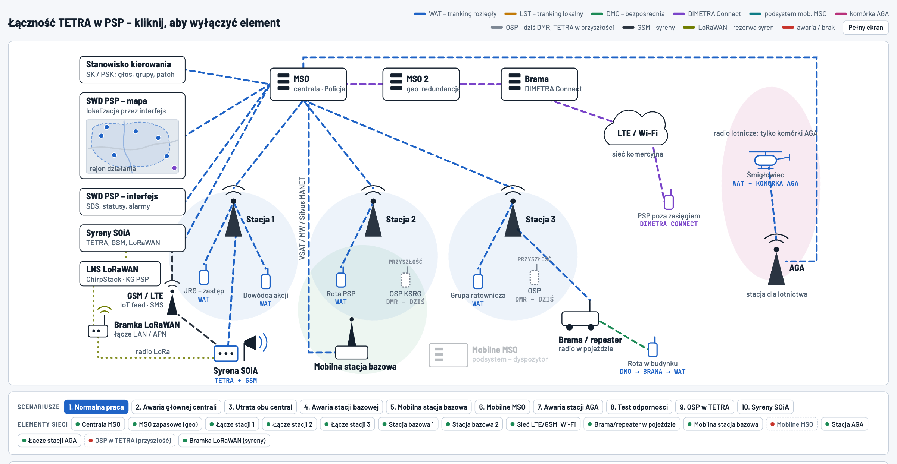
Sieć
Sekcja 01 · BIŁ KG PSP
Struktura Biura Informatyki i Łączności
31etatów
22funkcjonariuszy
8pracowników cywilnych
1stanowisko pomocnicze
rozwój systemów PSP
Źródło: Załącznik nr 1 do Regulaminu Organizacyjnego BIŁ (BIŁ-IV.0116.1.2026), brzmienie z 10.07.2026
Sekcja Łączności: radiokomunikacja, syreny SOiA w terenie
Regulamin Organizacyjny BIŁ, § 4
→
infrastruktura → aplikacje
Cyfryzacja
BIŁ-III5,5 etatu
Wymagania, architektura, prowadzenie projektów
Budowa aplikacji: SOiA, CEOZO, CEZOL
SWD PSP, mapy cyfrowe, testy i bezpieczeństwo aplikacji
Regulamin Organizacyjny BIŁ, § 6
Struktura Biura
Sekcja 02 · Komunikacja · Infolinia AI
Infolinia z asystentem AI
telefoniczna pomoc techniczna w języku polskim
grudzień 2026uruchomienie
Telefon użytkownika
rozmowa po polsku
Numer infolinii
jeden numer dla systemów centralnych
Asystentka AI głos PL
głos syntetyczny, prowadzi rozmowę
Baza wiedzy
zatwierdzona dokumentacja systemów
docelowo
Zgłoszenie
numer sprawy w WSPARCIE.SOIA
Pracownik BIŁ
przejęcie rozmowy, gdy sprawa tego wymaga
Pilot: numer warszawski (Zadarma) → agent głosowy ElevenLabs (głos polski) → model językowy → baza wiedzy (RAG)
Źródło: PROJEKTY/75-INFOLINIA, ADR-INFOLINIA-001 i ADR-INFOLINIA-002 (stan z 4.10.2026)
Komunikacja
Sekcja 02 · Komunikacja · Zgłoszenia
Zgłoszenia od 1 grudnia 2026
jeden kanał dla systemów centralnych PSP: pomoc@kg.straz.gov.pl
1.12.2026start produkcyjny
pomoc@kg.straz.gov.pl
jedyny kanał zwykłych zgłoszeń
Telefon
tylko sprawy krytyczne; przyjmujący rejestruje zgłoszenie
Infolinia z asystentem AI
grudzień 2026
WSPARCIE.SOIA
Service Desk: rejestr, numer sprawy
Pomoc AI
analiza zgłoszenia z bazą wiedzy
BIŁ
administratorzy systemu
Systemy centralne objęte zgłoszeniami · 5
CEOZO
Gdzie się ukryć
SOiA
CEZOL
SWD PSP
Sprawy: awarie, dostęp, uprawnienia, wsparcie użytkowników, incydenty bezpieczeństwa
Podstawa: rozporządzenie RM z 21.05.2024 r. w sprawie KRI (Dz. U. poz. 773), § 19 ust. 1 oraz ust. 2 pkt 2 i 13
Komunikacja
Sekcja 02 · Komunikacja · Kontakt
Kontakt w sprawach krytycznych
Zwykłe zgłoszenia: pomoc@kg.straz.gov.pltelefon tylko w sprawach krytycznych i pilnych
Grzegorz Jarosiński
Główny specjalista, BIŁ-II
Systemy centralne
tel. 47 722 39 30
kom. 511 435 231
gjarosinski@kg.straz.gov.pl
Zeskanuj, aby zapisać kontakt
Justyna Jakubowska
Specjalista, BIŁ-III
Systemy centralne
tel. 47 722 31 45
jjakubowska@kg.straz.gov.pl
Zeskanuj, aby zapisać kontakt
Kamil Piszczek
Starszy specjalista, BIŁ-I
SOiA: syreny
kom. 601 088 438
kpiszczek@kg.straz.gov.pl
Zeskanuj, aby zapisać kontakt
Komunikacja
Sekcja 02 · Komunikacja · Service Desk
WSPARCIE.SOIA: obsługa zgłoszeń
pomoc.kg.straz.gov.pl
pomoc.kg.straz.gov.pl
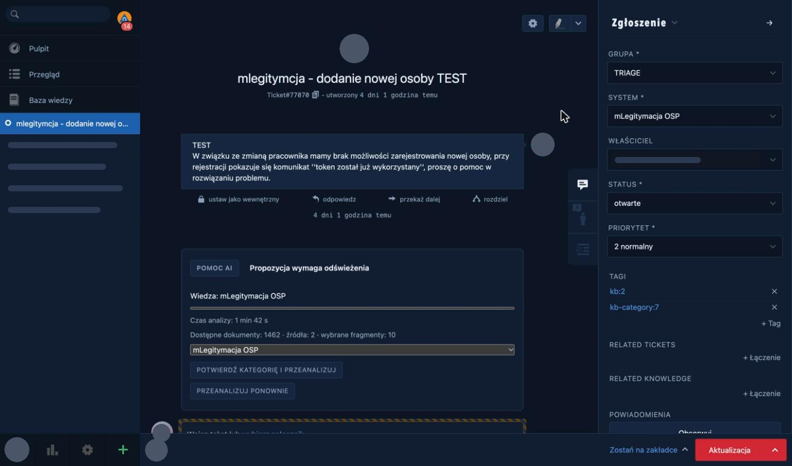
1
2
pomoc.kg.straz.gov.pl
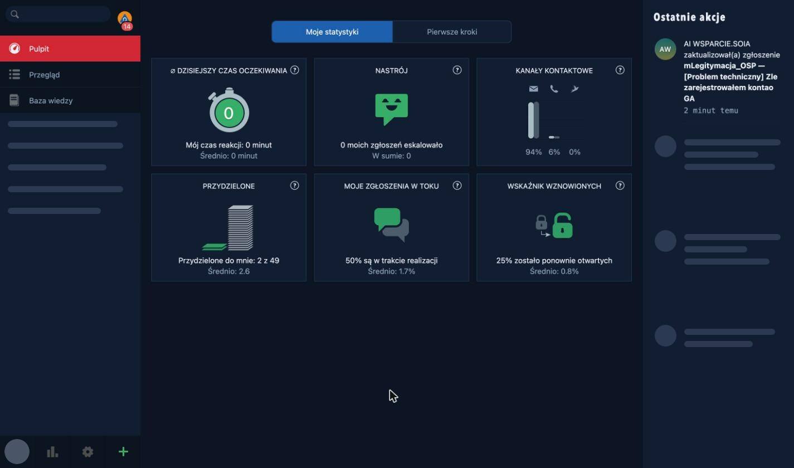
3
1
Zgłoszenie przypisane do systemu i osobygrupa, system, właściciel, status, priorytet
2
Pomoc AI: analiza zgłoszenia z bazą wiedzy1 462 dokumenty dostępne dla analizy (zgłoszenie testowe, mLegitymacja OSP)
3
Pulpit: czas reakcji, zgłoszenia w toku, kanałykanały: 94% e-mail, 6% telefon (stan 16.11.2026)
Komunikacja
Sekcja 03 · Gdzie się ukryć PL
Gdzie się ukryć PL
gdziesieukryc.pl: mapa punktów schronienia na telefon i komputer (PWA)
gdziesieukryc.pl
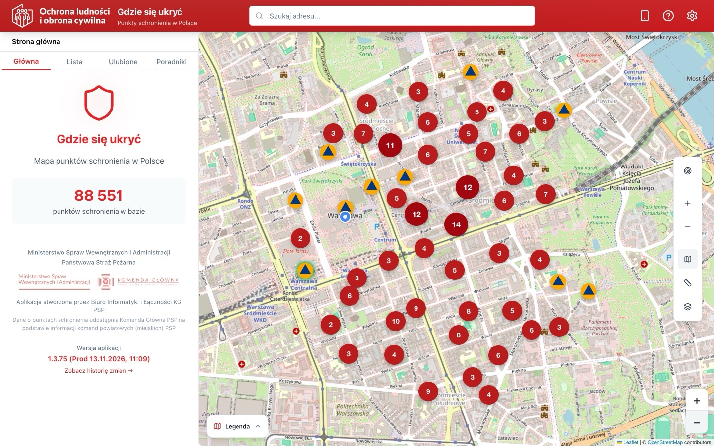
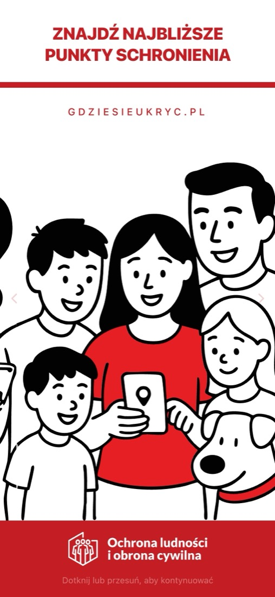
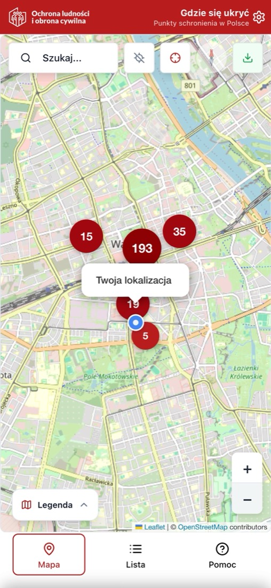
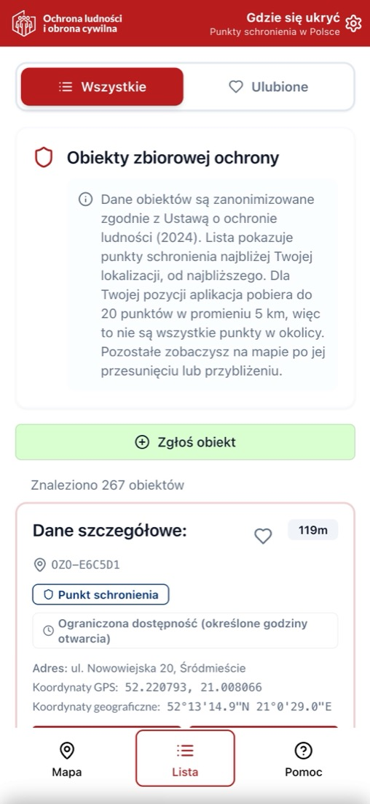
Funkcje
Jeden adres: telefon, komputer, instalacja na ekranie (PWA)
Mapa, lista najbliższych, nawigacja i kompas
Działa offline: mapa, punkty, poradniki
Aplikacje iOS i Android w sklepach
88 551punktów schronienia w bazie (stan 16.11.2026)
Gdzie się ukryć PL · wydawca: Komenda Główna Państwowej Straży Pożarnej
play.google.com
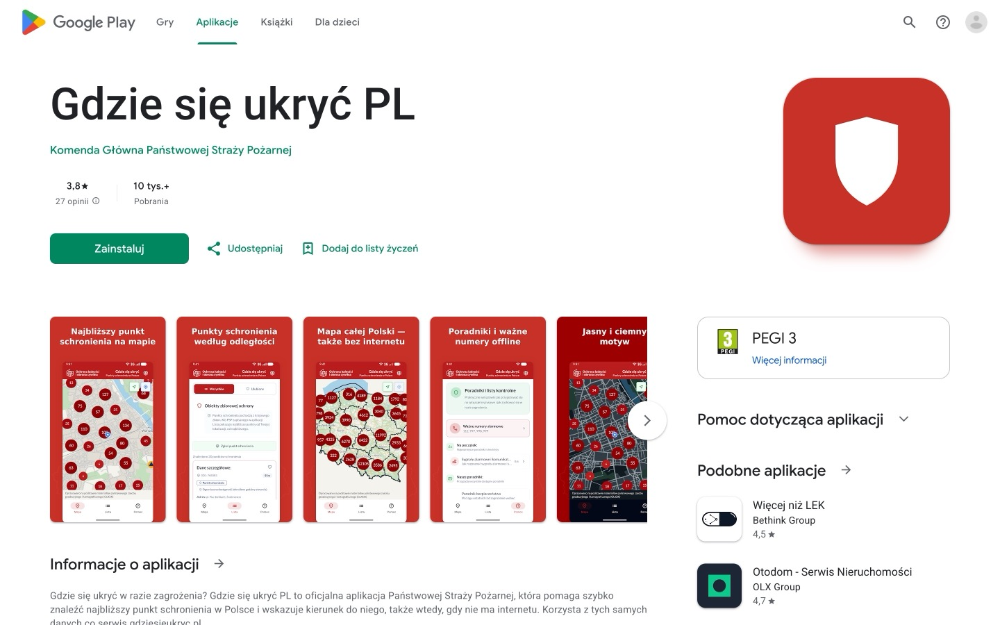
22 794pobrania (sklep pokazuje „10 tys.+”; dane strony sklepu, 16.11.2026)
#10wśród bezpłatnych w kategorii Mapy i nawigacja
3,8 ★ocena z 27 opinii
1.2.0wersja z 25.10.2026 · PEGI 3 · bezpłatna
Bez konta, bez reklam, bez śledzenia reklamowego
„Bezpieczeństwo danych”: brak udostępniania innym firmom, szyfrowanie w transmisji
Pobierz z Google Play
play.google.com · pl.gdziesieukryc.app
Gdzie się ukryć
Sekcja 03 · Gdzie się ukryć PL · iOS
App Store: iPhone
Gdzie się ukryć PL: Punkty schronienia offline · wydawca: Komenda Główna Państwowej Straży Pożarnej
apps.apple.com
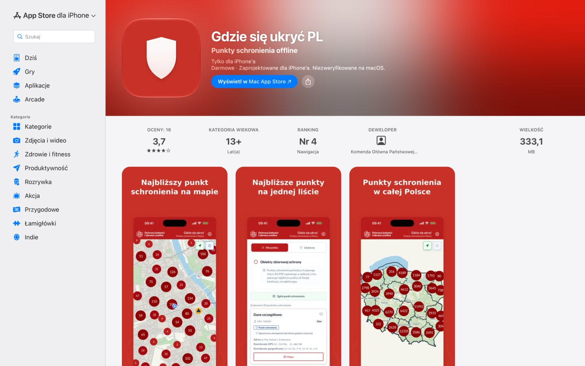
Nr 4w rankingu kategorii Nawigacja (App Store, 16.11.2026)
3,7 ★ocena z 18 ocen
1.2.0wersja wydana 27.10.2026 · iOS 16.4+
333 MBmapa całej Polski offline w aplikacji
Bezpłatna · kategoria wiekowa 13+
App Store nie publikuje liczby pobrań; pełne dane w App Store Connect
Pobierz z App Store
apps.apple.com · id6819162336
Gdzie się ukryć
Sekcja 03 · Gdzie się ukryć PL
Funkcje serwisu i aplikacji
Funkcje
Lista do 20 punktów w promieniu 5 km
Trasa piesza, kompas, nawigacja Google/Apple Maps
Offline: mapa okolicy, baza punktów Polski, poradniki
18 poradników, nagrania sygnałów alarmowych
Tryb uproszczony: bez mapy, prowadzenie głosem i wibracjami
2 MBbaza punktów całej Polski zapisywana w przeglądarce
288 MBmapa offline w aplikacji (dane GUGiK)
ok. 6 600testów automatycznych (PWA ok. 1 970, aplikacja ok. 4 660)
PS_XMLeksport otwartych danych co tydzień, licencja CC BY 4.0
Gdzie się ukryć
Sekcja 03 · Gdzie się ukryć PL
Prywatność i bezpieczeństwo
Prywatność
Bez kont i logowania dla obywatela
Dane punktów zanonimizowane (ustawa o ochronie ludności, 2024)
Aplikacja: lokalizacja zostaje w telefonie
Publikowane pola punktu: lokalizacja, adres, gmina, powiat, województwo, dostępność; identyfikator OZO-… (skrót SHA-256), nazwa ogólna „Punkt schronienia”. Wyjątek: trasa piesza (Mapbox) dopiero po zgodzie użytkownika, start zaokrąglony do ok. 11 m.
Ochrona serwisu
Serwis: lokalizacja zaokrąglona do ok. 100 m, przechowywana do 6 h
Dostęp z Polski, CSP, HSTS, limity zapytań
Gdzie się ukryć
Sekcja 03 · Prawo · Punkty schronienia
Kto wprowadza punkty schronienia
ustawa z 5 grudnia 2024 r. o ochronie ludności i obronie cywilnej (Dz. U. poz. 1907 ze zm.)
Komendant Główny PSP
prowadzi Centralną Ewidencję OZO · art. 108
Komendant powiatowy (miejski) PSP
identyfikuje punkty schronienia · art. 91a
wprowadza dane do ewidencji · art. 109 ust. 2 pkt 4
Wójt / burmistrz
Starosta
Właściciel lub zarządca
zawiadamiazawiadamiadane
Punkt schronienia · art. 84a
miejsce przydatne do tymczasowego ukrycia ludzi, w obiekcie budowlanym albo w innym miejscu, chroniące przed nagłymi niebezpiecznymi zjawiskami pogodowymi oraz skutkami użycia konwencjonalnych środków rażenia, w szczególności odłamkami
Dane punktu schronienia · art. 108 ust. 5
1rodzaj obiektu lub miejsca
2lokalizacja: adres i współrzędne
3dostępność
Informowanie ludności (art. 114 ust. 2–4): gdziesieukryc.pl i aplikacje mobilne
Gdzie się ukryć
Sekcja 03 · Panel administracyjny
Panel admin.gdziesieukryc.pl
system, w którym komendy PSP wprowadzają i zatwierdzają punkty schronienia
88 473punkty publiczne w serwisie gdziesieukryc.pl
2 030aktywnych użytkowników, w tym 1 873 administratorów powiatowych
108nowych punktów dziennie, średnio z 30 dni (łącznie 3 246)
64,15%pokrycia ludności w skali kraju, 641,5 miejsca na 1 000 mieszkańców (art. 114)
Źródło: publiczny raport krajowy admin.gdziesieukryc.pl/raport-dzienny, raport z 13.11.2026, odczyt 16.11.2026. Pokrycie panel liczy z pojemności wpisanej przez użytkowników.
Gdzie się ukryć
Sekcja 03 · Panel administracyjny
Od wpisu do publikacji
Szkic
autozapis
Oczekuje na zatwierdzenie
przypomnienie po 72 h, codziennie 8:00
Zatwierdzony
albo: odrzucony
Publikacja
tylko punkty zatwierdzone i oznaczone do udostępnienia
Common Alerting Protocol: międzynarodowy standard OASIS i ITU-T
OASIS CAP 1.2 · standard z 1.07.2010ITU-T X.1303bis · 1.03.2014, technicznie równoważny CAP 1.2
DZIŚ: każdy kanał swój format
komunikat CAP<alert>
CO<event>
GDZIE<area>
KIEDY<onset>
JAK GROŹNE<severity>
CO ROBIĆ<instruction>
Aplikacja RSO
Alert RCB (SMS)
WWW administracji
Radio i TV
Prasa online
Aplikacje mobilne
Syreny
Znaki drogowe VMS
Szybkie kanały cyfrowe
PL-CAP: polski profil
słownik zdarzeń
priorytety P1–P4
geografia TERYT/PRG
bezpieczeństwo i audyt
koperta dystrybucyjna PL-CAP-DIST
Podstawa: ustawa z 5.12.2024 r. o ochronie ludności i obronie cywilnej; rozporządzenie MSWiA z 14.05.2025 r. w sprawie alarmów i komunikatów ostrzegawczych (Dz. U. poz. 645)
alarm.soia.info · stan testowy
SOiA
Sekcja 04 · SOiA · ALARM.soia · Podstawy
Słownik zdarzeń PL-CAP
17 rodzajów zagrożeń + kod „Inne zagrożenie alarmowe”, w 12 kategoriach CAP
Pogoda i wodaIMGW-PIB
P3burza
P3silny wiatr
P3upał
P2powódź
PożaryPSP
P2pożar lasu
P2pożar obiektu
CBRNE
P1zagrożenie chemiczne
P1zagrożenie radiacyjne
Zdrowie i środowisko
P3zagrożenie epidemiczne
P3zanieczyszczenie powietrza
Infrastruktura i transport
P3awaria energetyczna
P3awaria wody
P4zamknięcie drogi
Bezpieczeństwo
P1zagrożenie terrorystyczne
P1zagrożenie militarne
P1zagrożenie z powietrza
Ratownictwo
P1ewakuacja
Inne
P3inne zagrożenie alarmowe
18kodów zdarzeń (17 zagrożeń + 1 zastępczy)
12kategorii CAP
6381kodów domyślnie w P1 · P2 · P3 · P4
Przykłady kodów: MET-BURZA, FIRE-LAS, SECURITY-AIR. Priorytet podnosi eskalacja, np. burza stopnia 3 IMGW → P2. Słownik w wersji 2026.3 z 28.09.2026.
alarm.soia.info · stan testowy
SOiA
Sekcja 04 · SOiA · ALARM.soia · Podstawy
Priorytety P1–P4
włączonywarunkowowyłączony
SyrenySMS Alert RCBRSOWWWMedia
P1
AlarmowyKiedy: zagrożenie życia wielu osób · Ty: działaj natychmiast
*
P2
Pilne ostrzeżenieKiedy: istotne zagrożenie · Ty: przygotuj się, unikaj obszaru
P3
Ostrzeżenie informacyjneKiedy: zagrożenie lokalne lub umiarkowane · Ty: zachowaj ostrożność
P4
Informacja / testKiedy: bez bezpośredniego zagrożenia · Ty: nic nie grozi
Kto publikuje: P1 i P2: dwa kolejne kody jednorazowe operatora albo osoba z rolą zatwierdzającego, podpis cyfrowy dla komunikatów rzeczywistych (Actual) · P3: operator z drugim składnikiem logowania · P4: operator jednoosobowo
* syreny przy P1 tylko wtedy, gdy operator jawnie je włączy
alarm.soia.info · stan testowy
SOiA
Sekcja 04 · SOiA · ALARM.soia
Jak czytać alerty
alarm.soia.info/jak-czytac-alerty: strona dla mieszkańców
alarm.soia.info/jak-czytac-alerty
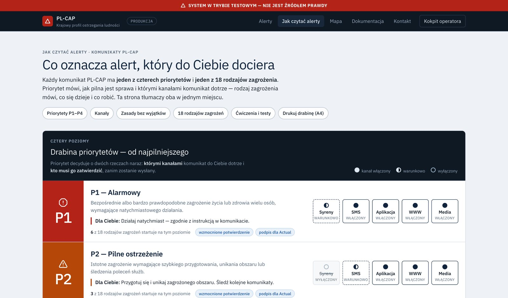
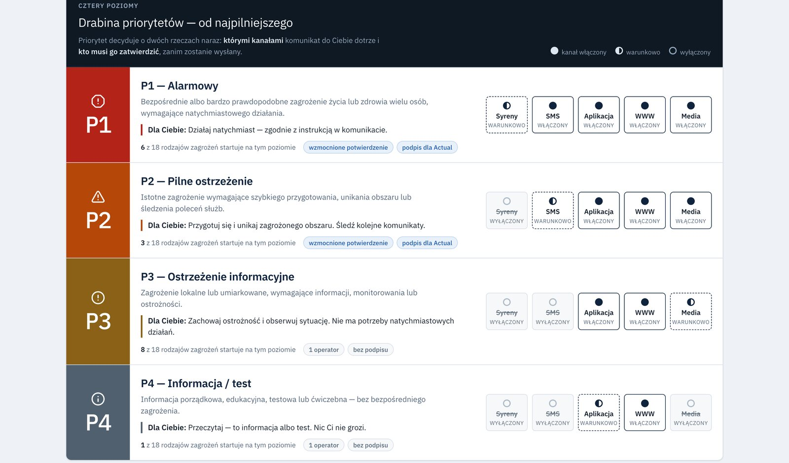
1
2
3
4
1
4 poziomy: od P1 „Alarmowy” do P4 „Informacja / test”startuje na poziomie: P1 6 · P2 3 · P3 8 · P4 1 (z 18 rodzajów)
2
„Dla Ciebie”: co robić przy każdym poziomie
3
Lampki 5 kanałówsyreny, SMS, aplikacja, WWW, media
4
Kto zatwierdzaP1–P2: wzmocnione potwierdzenie i podpis dla Actual
Strona ma wersję do druku „Drukuj drabinę (A4)”. Kolory priorytetów na zrzucie są oryginalne.
STAN TESTOWY
SOiA
Sekcja 04 · SOiA · ALARM.soia
Zasady bez wyjątków
sześć reguł zapisanych w profilu PL-CAP i w systemie
alarm.soia.info/jak-czytac-alerty
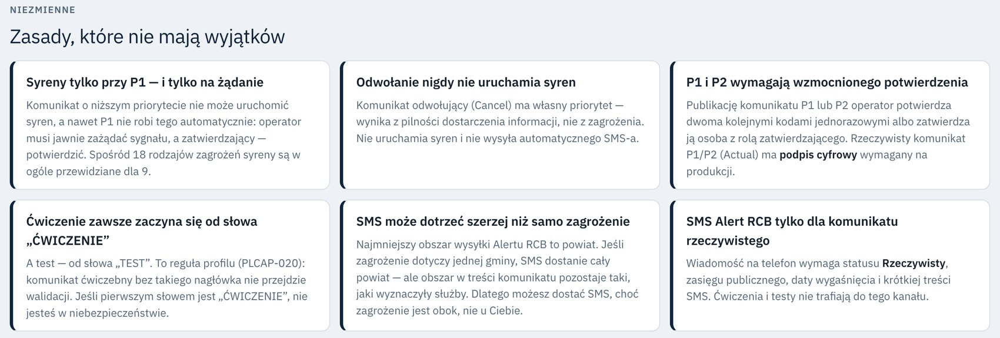
1
2
3
4
5
6
Syreny są przewidziane dla 9 z 18 rodzajów zagrożeń · najmniejszy obszar wysyłki Alertu RCB to powiat · reguła PLCAP-020: komunikat ćwiczebny bez nagłówka „ĆWICZENIE” (testowy bez „TEST”) nie przejdzie walidacji.
alarm.soia.info · stan testowy
SOiA
Sekcja 04 · SOiA · ALARM.soia
ALARM.soia: jak działa
system dyspozytorski + portal publiczny + aplikacja ALARM.SOIA
Operatorkokpit: kreator komunikatu
Walidacja PL-CAPreguły profilu
Zatwierdzenie2 kody jednorazowe albo druga osoba; podpis dla P1–P2
Aplikacja ALARM.SOIA: „cyfrowy pager mieszkańca”, bez konta
Kanały: aplikacja, SMS Alert RCB, syreny, WWW, media
Docelowy adres: alarm.gov.pl
Domeny alarm.gov.pl, soia.gov.pl, portal.gov.pl i system.gov.pl pozyskane w listopadzie 2026 r. · Aplikacja ALARM.SOIA dziś dla testerów (TestFlight, ścieżka wewnętrzna Google Play); publiczna dystrybucja wstrzymana od 25.09.2026.
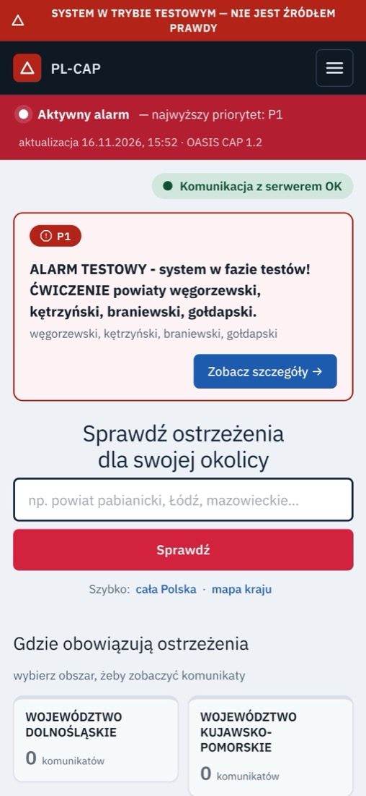
alarm.soia.info · stan testowy
SOiA
Sekcja 04 · SOiA · ALARM.soia
Portal publiczny ALARM.soia
alarm.soia.info
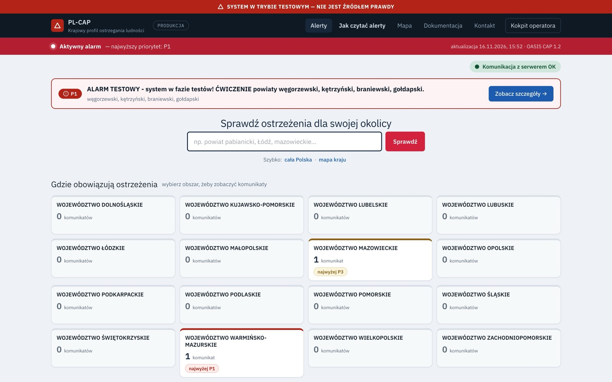
1
2
3
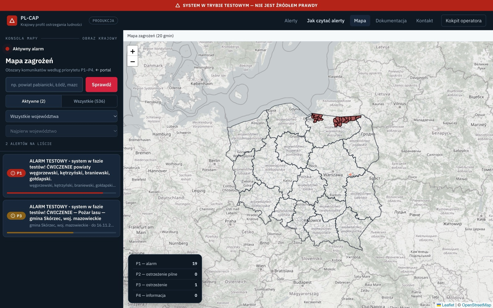
4
1
Pasek aktywnego alarmunajwyższy priorytet i treść komunikatu
2
Wyszukiwarkagmina, powiat, województwo
3
Kafelki 16 województwliczba komunikatów i najwyższy priorytet
4
Mapa zagrożeńobszary według priorytetu P1–P4
Stan 16.11.2026, 15:52: 2 aktywne komunikaty ćwiczebne (P1: powiaty węgorzewski, kętrzyński, braniewski, gołdapski; P3: pożar lasu, gmina Skórzec) · 536 komunikatów w historii systemu (testowe i ćwiczebne).
alarm.soia.info · stan testowy
SOiA
Sekcja 04 · SOiA · ALARM.soia
Bezpieczeństwo i weryfikacja
Zabezpieczenia
Wyłącznik każdego kanału: powiadomienia, syreny, portal
Centralne odwołanie alertu przez KG PSP
Przerwanie aktywnej syreny
Zakaz adresów internetowych w alertach krytycznych
Logi bez danych osobowych, skan podatności przy każdej zmianie
16.11.2026DK WOC · ABWprzekazanie kodu, dokumentacji powykonawczej v0.7.0 i środowiska demonstracyjnego do weryfikacji
784 / 0testy end-to-end na wersji produkcyjnej / nieudanych (15.11.2026)
239zmian w kodzie w 10 dni (2–12.11.2026), 180 zamkniętych zgłoszeń
1 096 / 933zmian / pakietów zmian w repozytorium systemu (12.11.2026)
Środowisko demonstracyjne: dane syntetyczne, 12 kont testowych (po 3 na rolę), wszystkie sekrety fikcyjne.
alarm.soia.info · stan testowy
SOiA
Sekcja 04 · SOiA · ALARM.soia · Aplikacja
Aplikacja ALARM.SOIA
oficjalne ostrzeżenia dla wybranych powiatów, bez konta: Android i iPhone
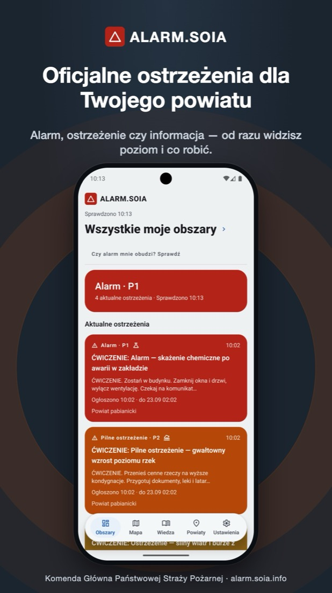
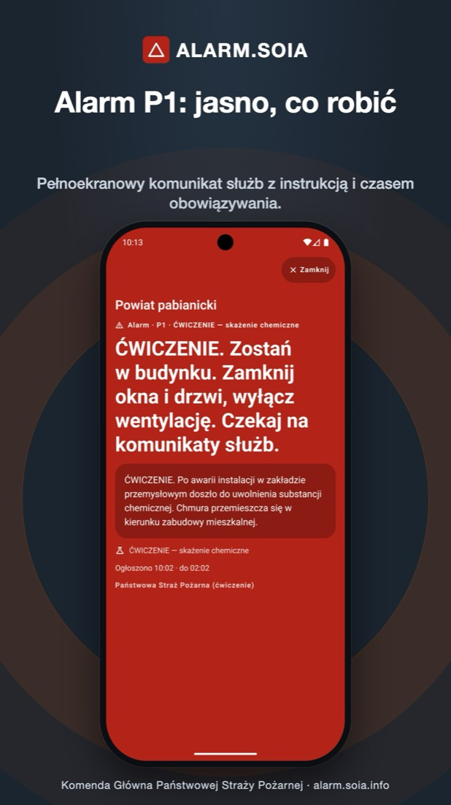
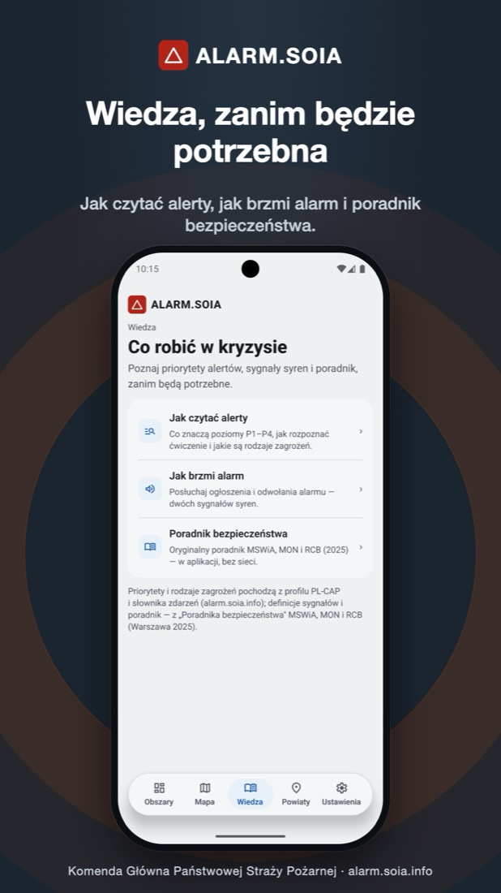
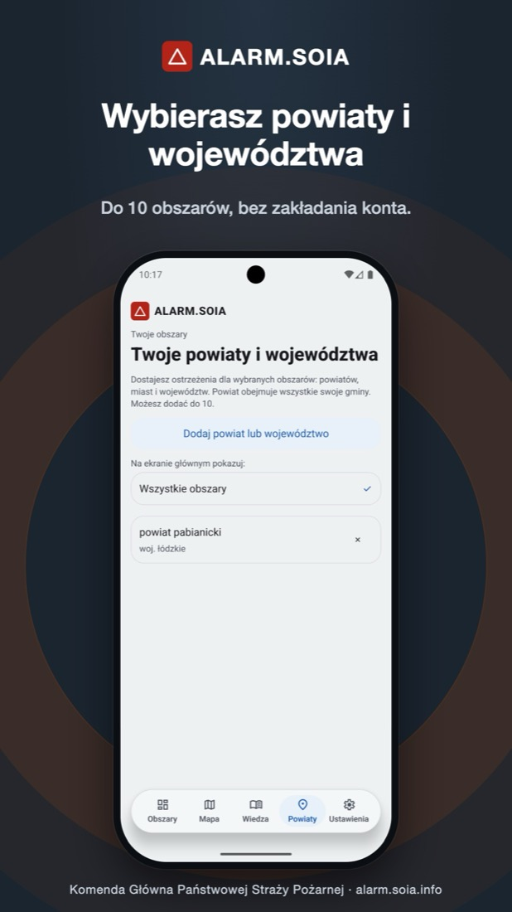
Do 10 obszarów: powiat, miasto, województwo (TERYT)
Bez konta i bez odczytu położenia telefonu
Alarm P1 na pełnym ekranie, głośno mimo wyciszenia
Mapa, historia 48 h, sygnały syren, poradnik offline
Na iPhonie głośny alarm P1 po zgodzie na alerty krytyczne; mapa ostrzeżeń w tej wersji na iPhonie, na Androidzie lista. „Poradnik bezpieczeństwa” MSWiA, MON i RCB (2025) dostępny bez sieci.
0kont i haseł
30 sodświeżanie w otwartej aplikacji, poza nią powiadomienia push
P1–P4cztery poziomy
10obszarów do wyboru
alarm.soia.info · stan testowy
SOiA
Sekcja 04 · SOiA · ALARM.soia · Aplikacja
Wydania i bezpieczeństwo aplikacji
Wydania
21.09.2026wersja 1.0.5, pierwsza bez oznaczenia testowego
dziś testerzyTestFlight i test wewnętrzny Google Play
Google Play: wersja 1.0.5 wysłana do przeglądu 22.09.2026, od 25.09.2026 „wycofana”, dostęp tylko dla testerów wewnętrznych. App Store: osoby, które pobrały aplikację 23–25.09, zachowują ją.
Bezpieczeństwo
Tylko HTTPS do alarm.soia.info, sprawdzanie odpowiedzi serwera
Aplikacja tylko odbiera, nie publikuje
Serwer zna tylko token powiadomień i listę obszarów
Bez analityki, reklam i lokalizacji
Zgłaszanie problemów bezpieczeństwa: informacje@kg.straz.gov.pl, temat „ALARM.SOIA — bezpieczeństwo”.
Strona aplikacji
kgpsp.github.io/alarm-soia-public
alarm.soia.info · stan testowy
SOiA
Sekcja 04 · SOiA · SYRENY.soia
Syreny: zamówienie B3
3 711PZL
Prekonfigurowany Zestaw Lokalny „Plug & Play”
sterownik syrenySS-100
+
bramkaLoRaWAN
+
zasilaniew zestawie
16województw: odbiory FAT-D w każdej KW (31.07–20.08.2026)
21.08.2026Odbiór Końcowy, w terminie KPO
35,1 mln złbrutto · umowa BL-V.2373.13.2026 z 10.06.2026 · INNERGO Systems / CThings
36 mies.gwarancji · platforma dostępna min. 99,5% · poprawki krytyczne do 14 dni
10.06.2026umowa
31.07–20.08dostawy, FAT-D w 16 KW
21.08.2026odbiór końcowy (KPO)
2027montaż w jednostkach
Platforma: LNS ChirpStack (sieć LoRaWAN), Orchestra Manager (rejestr i konfiguracja sterowników), CUPS (bramki), Grafana; Laboratorium Referencyjne w KG PSP. Gwarancja PZL biegnie od SAT po montażu (2027).
SOiA
Sekcja 04 · SOiA · SYRENY.soia · IoT feed
IoT feed: komunikat dla urządzeń
ALARM.soia
wystawia polecenie
IoT feedalarm.soia.info/api/v1/iot/feed
STARTgmina 1008021 · do 13:14podpis ✓
HTTPS, tylko odczyt · podpis Ed25519
Sterownik syreny„jest coś dla mnie?”
Sterownik syreny„jest coś dla mnie?”
Tablica„jest coś dla mnie?”
pytanie co 5–15 s (SS-100: co 30 s)
Publiczny feed: dla ludzi „co się dzieje”; IoT feed: dla urządzeń „co zrobić”
Urządzenie samo pyta serwer co kilka–kilkanaście sekund
Każda odpowiedź podpisana cyfrowo (Ed25519)
Polecenia: START (alarm 3 min) i odwołanie oczekującego startu
Pobranie to nie wykonanie: feed nie zwraca potwierdzenia
POBRANIE ≠ WYKONANIE · brak potwierdzenia zwrotnego
alarm.soia.info · stan testowy
SOiA
Sekcja 04 · SOiA · SYRENY.soia · IoT feed
Bez rejestracji, z podpisem
Zaufanie = podpis cyfrowy, nie lista urządzeń
Wariant A · odbiornik feeduwystarczy do alarmu
Wariant B · urządzenie zarządzanepełne zarządzanie
Rejestracja w systemie KG PSP
nie
tak (Orchestra, LNS)
Konto, hasło, umowa do odczytu
nie
tożsamość egzemplarza, klucze
Na czym opiera się zaufanie
podpis i kod TERC
podpis + zarządzanie przez KG PSP
Potwierdzenie i stan urządzenia
brak
stan online, dziennik, aktualizacje
Kto odpowiada za konfigurację
właściciel urządzenia
KG PSP
„Dla publicznego odczytu nie są wymagane konto operatora, token API ani rejestracja” (instrukcja konfiguracji odbiornika IoT feed). „To nie serwer CAP decyduje, czy syrena zawyje — decyduje firmware sterownika”. Przed produkcją dokumentacja przewiduje zgłoszenie urządzenia do KG PSP / RCB: to uzgodnienie, nie aprowizacja.
alarm.soia.info · stan testowy
SOiA
Sekcja 04 · SOiA · SYRENY.soia · IoT feed
Siedem bramek przed alarmem
IoT feed
1✓
podpis cyfrowy poprawny, zaufany klucz
2✓
właściwe środowisko: produkcja, nie demo
3✓
feed świeży, nie przeterminowany
4✓
polecenie dla sterownika, komunikat rzeczywisty
5✓
obszar: kod gminy obejmuje moją gminę
6✓
w oknie czasu: do 180 s od publikacji
7✓
nowe polecenie, nie wykonane wcześniej
syrena: 3 min
ODMOWA / pomiń: przy jakiejkolwiek wątpliwości syrena milczy
START powstaje tylko dla P1, gdy operator świadomie zaznaczy syreny, a publikację zatwierdzi drugi kod jednorazowy albo druga osoba. Okno 180 s ogranicza moment uruchomienia, nie długość sygnału.
Obszar (ADR-0070): sterownik w gminie 1008021 reaguje na kody 1008021, 1008, 10 i PL; nie reaguje na inną gminę ani inny powiat.
Odwołanie:CANCEL_PENDING powstrzymuje start, który jeszcze nie nastąpił; nie przerywa grającej syreny. Przerwanie grającej syreny (SIREN_ABORT_ACTIVE) i dźwiękowe odwołanie to plan.
alarm.soia.info · stan testowy
SOiA
Sekcja 04 · SOiA · SYRENY.soia · Technika
Sterownik od środka
jak polecenie dociera do sterownika i jak sterownik uruchamia syrenę
Centrum KG PSP
ALARM.soiaIoT feed
Orchestra Managerzarządzanie
ChirpStackLoRaWAN (LNS)
syrena elektroniczna
albo
syrena silnikowa
brak wszystkich kanałów → sterownik nie tworzy alarmu sam
ŁącznośćLAN, GSM/LTE na karcie M2M Orange w APN KG PSP, LoRaWAN; TETRA docelowo
Zarządzanietunel VPN WireGuard (Orchestra SDN)
Polecenie alarmuHTTPS z TLS i podpisem cyfrowym; zapasowo SMS
Dźwiękplik z pamięci sterownika → wyjście audio + PTT → syrena
Bez siecisterownik nie wymyśli alarmu sam
Płytka w stylu Raspberry Pi to wizualizacja: SS-100 z B3 jest przemysłowym sterownikiem z OrchestraOS. TETRA jako podstawowy kanał to zamiar (projekt pisma do KW PSP z 10.09.2026), nie stan. W czasie alarmu nic nie jest pobierane ani strumieniowane.
Ekrany w autobusach i pociągachprzewoźnicykierunek
Radiowęzłyszkoły, szpitale, zakłady pracykierunek
Domofony, smart TV, systemy budynkowekierunek
Telefony w zasięgu masztu: Cell Broadcastwymaga regulacjiw profilu
Dziś IoT feed obsługuje wyłącznie klasę „sterownik syreny” (słownik 2026.1); inne urządzenia wymagają rozszerzenia słownika klas. Profil PL-CAP §19: ROAD_VMS i Cell Broadcast poza wersją testową. Syrena nie przenosi treści, tylko sygnał; treść niesie tablica, ekran, aplikacja albo SMS.
SOiA
Sekcja 04 · SOiA · SYRENY.soia · Aprowizacja
Przyłączenie sterownika: kto co robi
KW: weryfikacja 5 dniKG: kompletność 3 dni · test 14 dni · protokół 3 dni
Producent
Zamawiającygmina, powiat, komenda PSP
Koordynator SOiA w KW PSP
KG PSPBIŁ-I, BIŁ-II
Instalator
Onboarding modelutożsamość i klucze egzemplarza, zaszyfrowany rejestr dostawy
Porozumienie i zgłoszeniezgłoszenie przyłączenia, potem zgłoszenie gotowości
Rejestracja i testnumer, LNS i Orchestra, test, protokół, stan „produkcyjny”
Montażsyrena i zasilanie; sterownik sam zgłasza się w sieci
Odbiór u zamawiającego dopiero po protokole pozytywnym · producent i wykonawca nie mają kont do rejestracji w systemach KG PSP · karty SIM z puli KG PSP, ewidencja BIŁ-II · dołączenie do LoRaWAN widoczne w LNS najpóźniej po 15 min · standard KG PSP v1.2, tryb Z: projekt.
SOiA
Sekcja 04 · SOiA · SYRENY.soia · Aprowizacja
Wysłanie i odpowiedź
Operator / ALARM.soia
IoT feed
Sterownik + syrena
KG PSP: Orchestra i LNS
1 · publikacja, drugi kod zatwierdza2a · sterownik pobiera feed i wykonujebrak odpowiedzi z feedu2b · SMS SOIA1 do sterownika
3 · Orchestra: online / offline, dziennik4 · LNS: sesja i ruch radiowy
ALARM.soiapolecenie dostępne
SMSwynik wykonania
Orchestraonline / offline (tunel zarządczy, nie dźwięk)
LNSłączność radiowa
Organ ogłasza i odwołuje alarm (wójt, starosta, wojewoda); stanowisko kierowania PSP uruchamia syreny na jego polecenie. Model referencyjny z odpowiedzią SMS działa od lipca 2026 r. w Białymstoku; dla SS-100 to wymaganie w uzgodnieniu z wykonawcą.
alarm.soia.info · stan testowy
SOiA
Sekcja 04 · SOiA · SYRENY.soia · Testy
Symulator sterownika syreny
ALARM.soia
↓
IoT feed
↓
Symulator sterownika
↓
Głośnik
A
Ćwiczeniesyrena milczy
✓ milczy
B
Alarm P1 z syrenamistan ALARM do 10 s
✓ alarm
C
Odwołanie alertupolecenie wycofane
✓ odwołanie
D
Alert dla obcej gminypolecenie odrzucone
✓ odrzucony
Testy negatywne: zły podpis · zły kod gminy · stary feed → odrzucone
22.08.2026symulator uruchomiony na produkcji
2syreny testowe pod kontrolą KG PSP: jedyni odbiorcy feedu
1.01.2027planowany start produkcyjny feedu dla urządzeń
0aktywnych poleceń w feedzie 16.11.2026
Symulator nie steruje fizycznym urządzeniem; brak potwierdzeń wykonania z założenia; sterowniki PZL i LoRaWAN poza zakresem symulatora.
Pulpit krajowy: zdarzenia aktywne i zakończone, ćwiczenia, rozesłania (oczekujące, zrealizowane, nieudane), ostatnie zdarzenia z priorytetem i statusem, czasy reakcji jednostek
Statystyki: średni czas reakcji, wskaźnik realizacji, zdarzenia wymagające natychmiastowej akcji, oś czasu zdarzeń, rozkład statusów i priorytetów
Pozostałe moduły: zdarzenia, mapa alertów, analizy, jednostki, zadania, ćwiczenia, raporty; kalkulator trajektorii obiektów powietrznych
Stan: MVP w środowisku testowym, 41 uwag MSWiA i RCB; pełna produkcja krajowa 18.12.2026 według harmonogramu
soia-alert.e-psp360.pl · pulpit krajowy
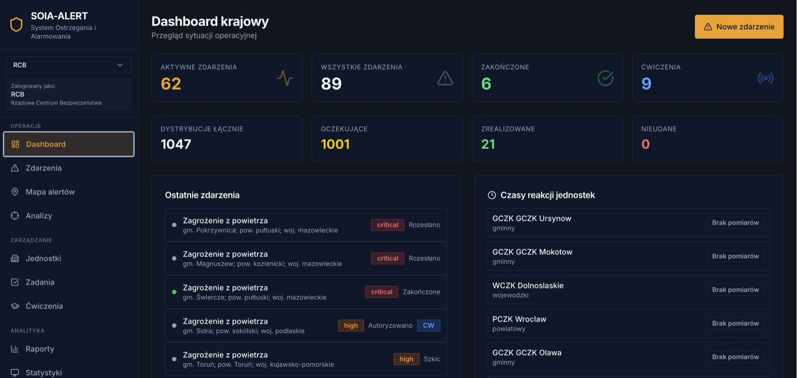
soia-alert.e-psp360.pl · Centrum Statystyk
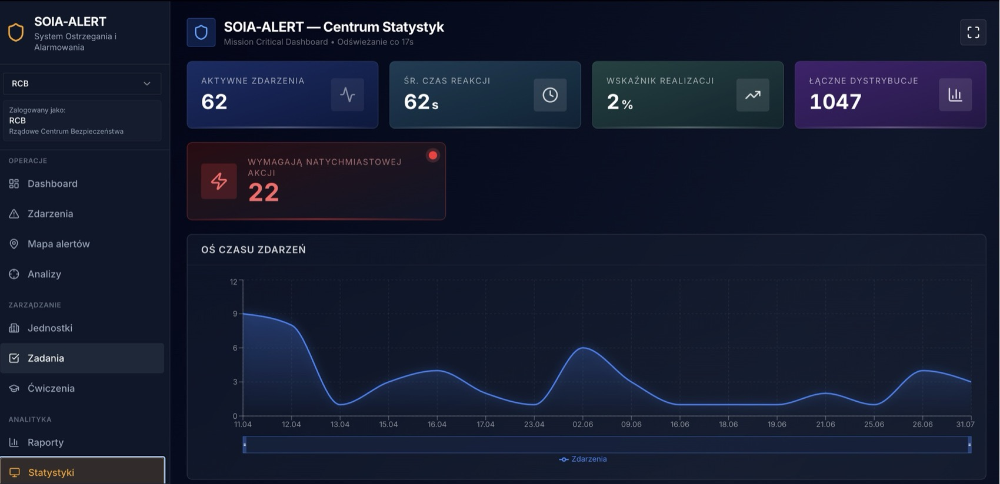
ZKSWD.soia · MVP, środowisko testowe · pulpit krajowy (widok RCB) · 16.11.2026ZKSWD.soia · MVP, środowisko testowe · Centrum Statystyk · 16.11.2026W MVP widnieje robocza nazwa SOIA-ALERT · dane testowe
16województw
380powiatów
2 479gmin
6ról: RCB, WCZK, MCZK, PCZK, GCZK, PSP
41uwag MSWiA i RCB do MVP (do 20.06.2026)
SOiA
Sekcja 04 · SOiA · CivCom
CivCom system łączności ochrony ludności · rozmowy tekstowe, głosowe i wideo · służbowy
Tekst, głos i wideo, szyfrowanie end-to-end
Logowanie kontem służbowym przez SSO.soia
Zamknięta sieć: bez rejestracji z zewnątrz, bez federacji
Przeglądarka dziś; komputer i telefon w przygotowaniu
Już w użyciu: rozmowy robocze z testującymi z centrów zarządzania kryzysowego, np. uwagi do ZKSWD.soia
Nie do informacji niejawnych: żadnej klauzuli, także „zastrzeżone”; szyfrowanie chroni przed podsłuchem, ale nie zmienia statusu systemu
przeglądarkadostępna
komputerw przygotowaniu
telefonw przygotowaniu
civcom.soia.info
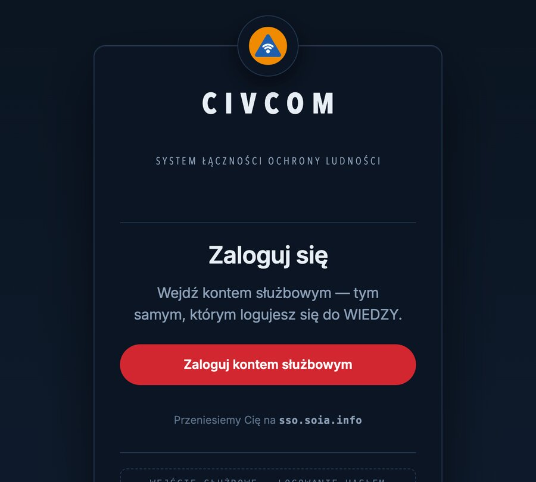
SSO
civcom.soia.info · rozmowa
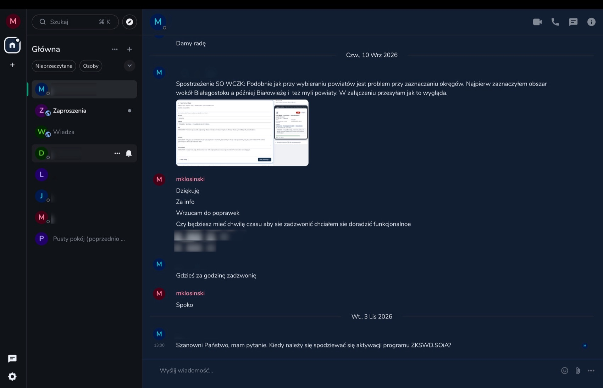
CivCom · rozmowa robocza o uwagach do ZKSWD.soia · dane osobowe zamazane
Matrix (Synapse, MAS, Element), serwery KG PSP · serwer od 15.08.2026 · CivCom = dawniej ResQNet.
SOiA
Sekcja 04 · SOiA · WIEDZA.soia
WIEDZA.soia baza wiedzy SOiA i ochrony ludności · procedury, instrukcje, standardy i akty prawne
Obszary: ochrona ludności, SOiA, procedury, instrukcje, standardy i dokumentacja techniczna, akty i wytyczne, szkolenia
Przy każdym dokumencie status: gotowy do użycia albo w trakcie aktualizacji
Wyszukiwarka i przycisk „Zgłoś błąd / aktualizację”
Konto służbowe przez SSO.soia; to samo konto otwiera CivCom
Bez informacji niejawnych, żadnej klauzuli
Uruchomiony, trwa napełnianie treścią; dokumenty po zalogowaniu i tylko dla kont z nadanym dostępem. Dokumenty powstają w warstwie roboczej BIŁ i są publikowane do WIEDZA.soia. Wiki.js + PostgreSQL.
wiedza.soia.info
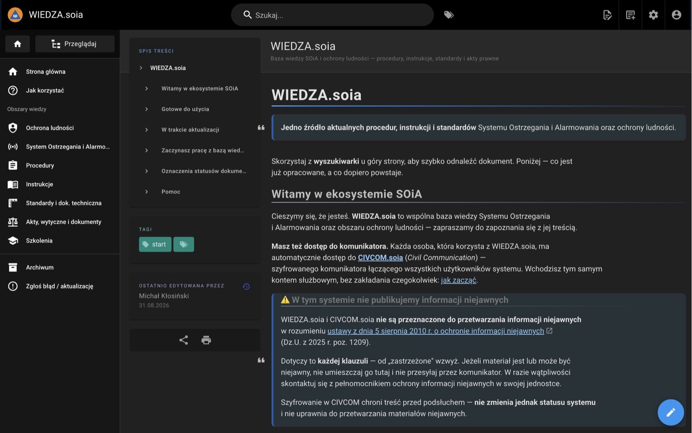
wiedza.soia.info
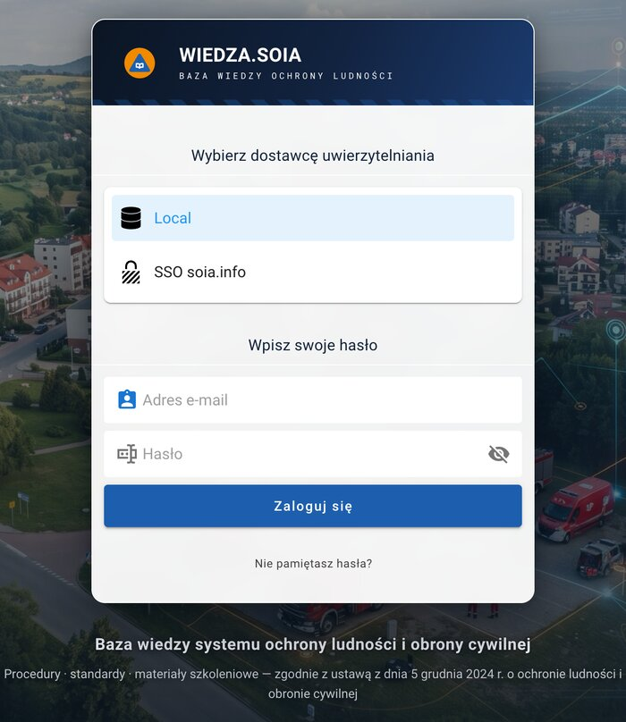
SSO
WIEDZA.soia · strona główna · 16.11.2026
SOiA
Sekcja 04 · SOiA · SSO.soia
SSO.soia
jedno logowanie do wszystkich systemów rodziny · infrastrukturalny
ALARM.soiapodłączane 2026
ZKSWD.soiapodłączane 2026
CivCompodłączane 2026
SYRENY.soiapodłączane 2026
WIEDZA.soiapodłączane 2026
CEZOLdo 31.12.2026
Gdzie się ukryćdo 31.12.2026
SSO.soiajedno konto
drugi składnik · SOIA Authenticator · offline
play.google.com
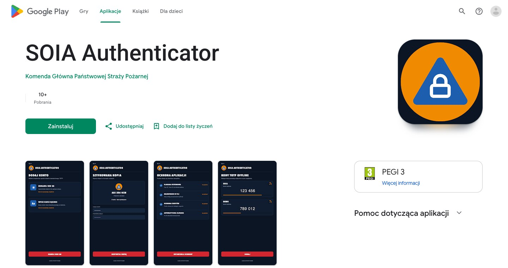
Google Play
apps.apple.com
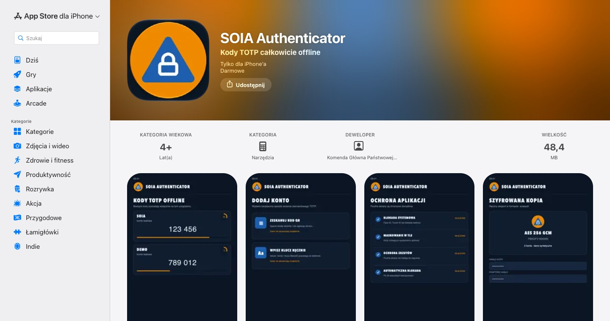
App Store
Jedno konto: ALARM, ZKSWD, CivCom, WIEDZA, SYRENY
Drugi składnik: kod z aplikacji SOIA Authenticator (Android i iPhone)
Konta dla ALARM.soia zakładane automatycznie od 13.10.2026
Do końca 2026: także CEZOL, Gdzie się ukryć
SOiA
Sekcja 05 · Pozostałe systemy · CEZOL
CEZOL: zasoby ochrony ludności Centralna Ewidencja Zasobów Ochrony Ludności i Obrony Cywilnej · ewidencja Ministra SWiA, prowadzi KG PSP
CEZOL ma pokazywać w jednym miejscu zasoby ochrony ludności w kraju: co jest, ile, u kogo, gdzie i czy jest dostępne.
Co jest, ile, u kogo, gdzie, czy dostępne
Wprowadzają organy i podmioty ochrony ludności
Katalog: 937 rodzajów zasobów w 7 działach
Dziś: budowa wersji docelowej, bez dostępu organów
937rodzajów zasobów w katalogu
kgpsp.github.io/CEZOL_KGPSP
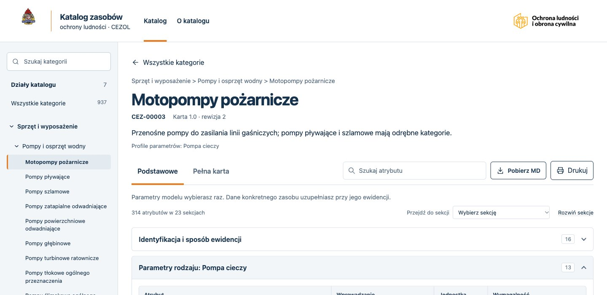
Katalog zasobów · strona publiczna · 16.11.2026
30.09.2026specyfikacja i katalog
IV kw. 2026testy w 3 województwach
31.12.2026koniec budowy
30.09.2027pełna gotowość, integracja z SWD PSP
Systemy
Sekcja 06 · Pozostałe systemy · CEOZO
CEOZO: obiekty zbiorowej ochrony Centralna Ewidencja Obiektów Zbiorowej Ochrony · prowadzi Komendant Główny PSP
CEOZO to ustawowa ewidencja schronów, ukryć, miejsc doraźnego schronienia i punktów schronienia; system jest zainstalowany i czeka na akredytację bezpieczeństwa.
Schrony, ukrycia, miejsca doraźnego schronienia, punkty schronienia
Część danych „zastrzeżone”: akredytacja, sieć SKR-Z
Grudzień 2026: akredytacja, urzędy i komendy wojewódzkie
I kw. 2027: pozostałe organy, punkty schronienia
schron
ukrycie
miejsce doraźnego schronienia
punkt schronienia
art. 108 ust. 3
wójt
starosta
wojewoda
KP/KM PSP
KW PSP
art. 109
CEOZOprowadzi KG PSPSKR-Z
punkty schronienia · I kw. 2027
Gdzie się ukryć PLserwis dla mieszkańców (art. 114)
grudzień 2026akredytacja · UW i KW PSP
I kw. 2027pozostałe organy · punkty schronienia
Systemy
Sekcja 07 · Pozostałe systemy · mLegitymacja OSP
mLegitymacja OSP legitymacja strażaka ratownika OSP w mObywatelu
Strażak składa wniosek w mLegitymacja.info, wójt go zatwierdza, a legitymacja trafia do mObywatela.
Podstawa: art. 29 ustawy o OSP, od 8.04.2026
Rejestr prowadzi KG PSP z powierzenia Ministra SWiA
Produkcja od 13.07.2026, wdrażanie województwami
Cały kraj: plan 30.11.2026
strażakwniosek w mLegitymacja.info
→
wójtzatwierdza
→
mObywatellegitymacja
rejestr: KG PSP
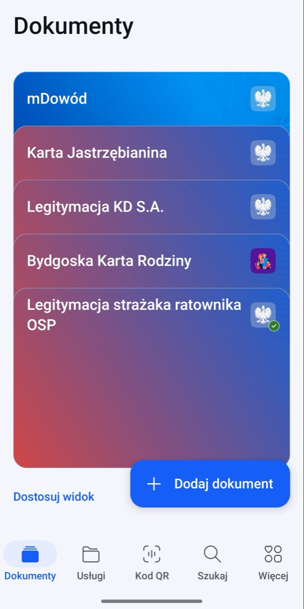
mObywatel · ekran testowy · 18.03.2026
Systemy
Sekcja 08 · Pozostałe systemy · Karta Rodziny Mundurowej
Karta Rodziny Mundurowej projekt ustawy, druk sejmowy nr 1964 · system dla PSP i OSP
Karta Rodziny Mundurowej jest wciąż projektem ustawy; po jej uchwaleniu Karty strażakom PSP i OSP przyznają komendanci PSP i wójtowie w systemie, który zbuduje KG PSP.
ok. 1 mlnKart
WniosekDla kogo: strażacy PSP i OSP z rodzinami
OrganPrzyznają: PSP: KG i KW PSP · OSP: wójt
Kartaplastikowa; w mObywatelu dodatkowo (wersja MC)
System MSWiAw praktyce KG PSP
ogłoszenie ustawy
projekt: 6 mies.art. 37 druku
BIŁ: 12 mies.Budowa: BIŁ, 12 miesięcy od ogłoszenia ustawy
Systemy
Sekcja 09 · Pozostałe systemy · SWD PSP
SWD PSP System Wspomagania Decyzji Państwowej Straży Pożarnej · art. 14g ustawy o ochronie przeciwpożarowej
W SWD PSP stanowiska kierowania PSP przyjmują zgłoszenia, dysponują siły i dokumentują działania; dziś tę rolę pełni SWD-ST, a nowy SWD PSP budujemy etapami.
Zgłoszenia z CPR 112, dysponowanie, nadzór, dokumentacja
Stanowiska kierowania: KG, 16 KW, KP/KM
Dziś: zdecentralizowany SWD-ST, od ok. 2010
Nowy SWD PSP — plan: testy 2027, wdrożenie IV kw. 2029
TETRA: wymagania interfejsu przekazane Policji 5.11.2026
telefon 112
CPR
SK PSP · SWD PSPdziś: SWD-ST
zadysponowanie
JRG / OSP
meldunek
dokumentacja
KG
KW
KP / KM
sieć TETRA · Policja
lokalizacja · statusy · SDS
plan
2027 testy
→
IV kw. 2029 wdrożenie
Systemy
Podsumowanie
Najbliższe terminy
listopad 2026 – 2029 · terminy z poszczególnych slajdów
→XI–XII 2026
16.11ALARM.soiakod i środowisko do weryfikacji DK WOC i ABW
30.11mLegitymacja OSPw całym krajuplan
1.12Zgłoszeniaprzez pomoc@kg.straz.gov.pl
10.12Gdzie się ukryćkoniec modernizacji panelu
grudzieńInfoliniaz asystentem AI
grudzieńCEOZOakredytacja, dostęp UW i KW PSP
18.12ZKSWD.soiapełna produkcja krajowa wg harmonogramu
31.12CEZOL · SD-WANkoniec budowy CEZOL; SD-WAN w 8 województwach
I kw. 2027
1.01IoT feedstart produkcyjny dla syren
I kw.CEOZOpozostałe organy, punkty schronienia
I kw.SD-WANpozostałe 5 województw
2027–2029
2027Syreny B3montaż 3 711 zestawów
2027SWD PSPtesty nowego systemuplan
30.09.2027CEZOLpełna gotowość z SWD PSP
IV kw. 2029SWD PSPwdrożenie kokpitu dyżurnegoplan
terminplan
Podsumowanie
KG PSP · Biuro Informatyki i Łączności
Dziękujemy
soia.info
System Ostrzegania i Alarmowania
st. bryg. J. Pozierakst. bryg. H. Turskist. bryg. M. Kłosińskist. bryg. J. Bugaj